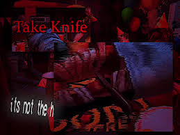

Daisuke teve ambos os olhos feridos, o que simboliza sua completa falta de discernimento quanto à verdadeira natureza de Jimmy. Essa representação serve para destacar sua ingenuidade e inocência diante dos acontecimentos.
No caso de Curly e Swansea, ambos sofreram lesões em apenas um dos olhos — Curly perdeu o olho direito, enquanto Swansea perdeu o olho esquerdo — o que sugere que cada um possuía uma percepção parcial e distinta sobre Jimmy. Swansea acreditava que Jimmy era, na realidade, uma pessoa mal-intencionada que apenas aparentava ser boa. Em contraste, Curly via Jimmy como alguém essencialmente bom, apenas encobrindo sua bondade com uma fachada agressiva, e acreditava que ele ainda poderia mudar.
Anya, por sua vez, foi a única personagem cujos olhos permaneceram ilesos, simbolizando que ela conseguia enxergar com clareza a verdadeira essência de Jimmy e compreendia plenamente quem ele realmente era.
O texto de Jimmy é verde. Conforme a história avança, Curly o vê como um Monstro de Olhos Verdes. Ironicamente, o verde também é associado à paz, à calma e à saúde, características que faltam a Jimmy.
A cor de Curly é o branco. Na maioria das vezes em que o vemos, ele está coberto da cabeça aos pés com bandagens brancas. O texto branco geralmente é atribuído a PNJs, o que é apropriado, dada sua incapacidade de influenciar qualquer pessoa na nave devido aos seus ferimentos. Além disso, prenuncia sua falta de ação em relação à situação entre Anya e Jimmy. O branco também é associado à pureza ou inocência, prenunciando que ele não foi quem destruiu a nave.
A cor de Anya é azul . Azul é comumente associado à calma e tristeza, o que se encaixa em sua perspectiva atual sombria, porém suave. Azul também é associado à medicina e à cura, o que explica por que seu texto azul é semelhante à cor do jaleco médico de Curly e do enxaguante bucal.
A cor de Swansea é amarelo , pois parece ser a cor que os mecânicos usam em Pony Express. Isso faz sentido, já que o amarelo é uma cor brilhante que contrasta fortemente com as máquinas, tornando mais fácil vê-las/extraí-las em caso de acidente. O amarelo está associado a sinais de cuidado/aviso. A princípio, a narrativa o faz parecer perigoso para a tripulação, pois segura o machado e age como um alcoólatra estereotipado enlouquecendo, mas mais tarde ele é revelado como o mais preocupado com a segurança da tripulação. O amarelo também pode aludir ao seu Coração de Ouro Oculto em relação a Daisuke . Da mesma forma, danos ao fígado como resultado do alcoolismo podem fazer a pele humana parecer amarela.
A cor de Daisuke é rosa , como a camisa havaiana que ele usa. Apropriadamente, ele é o mais alegre e otimista da tripulação . Representa também a inocência. Daisuke é o mais jovem da tripulação, o menos experiente e o único que não sabe ou suspeita que Jimmy seja pior do que ele se apresenta. Isso permite que Jimmy manipule Daisuke para entrar na perigosa ventilação em Utility, levando à sua morte.
À medida que os suprimentos de comida diminuem , Jimmy e Curly são os últimos a serem deixados para trás. O primeiro, que já está sofrendo de um caso grave de Deslizamento de Sanidade , coloca o segundo na mesa e começa a cortar uma de suas pernas para se alimentar. Como se isso não fosse ruim o suficiente, Jimmy força Curly a começar a comer sua própria carne também , alimentando seu antigo capitão com ela novamente, mesmo que Curly vomite o pedaço. Dado o estado mental de Jimmy, não está claro o quão literal isso é.
 topo da página
topo da página